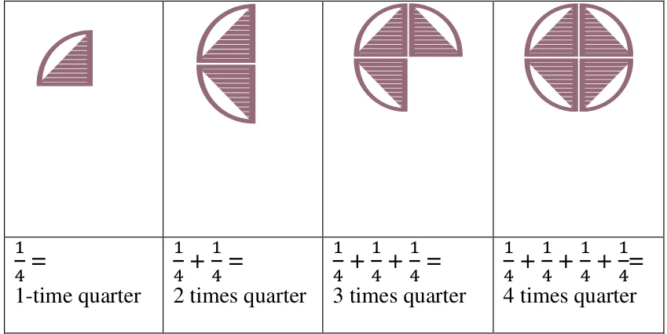
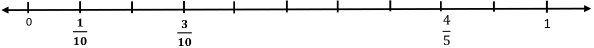
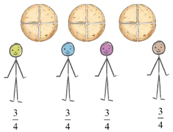
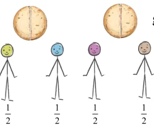
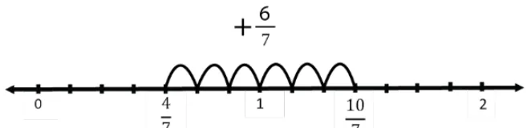
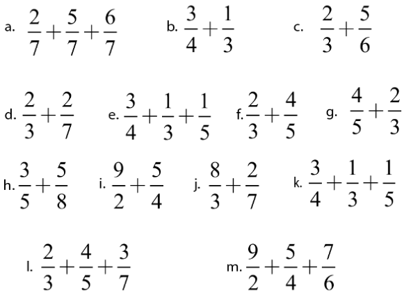

Fractions
Section 7.1
Page no. 152
Figure it out
Q1. Three guavas together weigh 1 kg. If they are roughly of the same size, each guava
will roughly weigh ____kg.
Ans. \(\frac{1}{3}\)
Q2. A wholesale merchant packed 1 kg of rice in four packets of equal weight. The weight
of each packet is_______ kg.
Ans. \(\frac{1}{4}\)
Q3. Four friends ordered 3 glasses of sugarcane juice and shared it equally among
themselves. Each one drank ____ glass of sugarcane juice
Ans. \(\frac{3}{4}\)
Q4. The big fish weighs \(\frac{𝟏}{𝟐}\) kg. The small one weighs \(\frac{𝟏}{𝟒}\) kg. Together they weigh ____ kg.
Ans. \(\frac{3}{4}\)
Q5. Arrange these fraction words in order of size from the smallest to the biggest in the
empty box below:
One and a half, three quarters, one and a quarter, half, quarter, two and a half.
Ans. \(\frac{1}{4}\) , \(\frac{1}{2}\) , \(\frac{3}{4}\) , \(1 \frac{1}{4}\) , \(1 \frac{1}{2}\) , \(2 \frac{1}{2}\)
Section 7.2
Page No. 154
Q. By dividing the whole chikki into 6 equal parts in different ways, we get 1/6 chikki
pieces of different shapes. Are they of the same size?
Ans. Yes, they are of the same size.
Page No. 155
Figure it out
Q. The figures below show different fractional units of a whole chikki. How much of a
whole chikki is each piece?
Ans. a. \(\frac{1}{12} b\). \(\frac{1}{4} c\). \(\frac{1}{8} d\). \(\frac{1}{6} e\). \(\frac{1}{8} f\). \(\frac{1}{6} g\). \(\frac{1}{24} h\). \(\frac{1}{24}\)
Section 7.3
Figure it out Page No. 158
Q1. continue this table of \(\frac{𝟏}{𝟐}\) for 2 more steps.
Ans. \(\frac{1}{2} + \frac{1}{2} + \frac{1}{2} + \frac{1}{2} + \frac{1}{2} + \frac{1}{2} = 6\) times \(\frac{1}{2}\)
\(\frac{1}{2} + \frac{1}{2} + \frac{1}{2} + \frac{1}{2} + \frac{1}{2} + \frac{1}{2} + \frac{1}{2} = 7\) times \(\frac{1}{2}\)
Q2. Can you create a similar table for \(\frac{𝟏}{𝟒}\) ?
Ans.

Try Further!
Q4. Draw a picture and write an addition statement as above to show:
- a.5 times \(\frac{𝟏}{𝟒}\) of a roti b. 9 times \(\frac{𝟏}{𝟒}\) of a roti
Ans. .
\(\frac{1}{4} + \frac{1}{4} + \frac{1}{4} + \frac{1}{4} + \frac{1}{4} = \frac{5}{4} = 5\) times quarter
b.
\(\frac{1}{4} + \frac{1}{4} + \frac{1}{4} + \frac{1}{4} + \frac{1}{4} + \frac{1}{4} + \frac{1}{4} + \frac{1}{4} + \frac{1}{4} = \frac{9}{4} = 9\) times quarter \(= 2 + \frac{1}{4}\)
Q5. Match each fractional unit with the correct picture:
\(\frac{𝟏}{𝟑} \frac{𝟏}{𝟓} \frac{𝟏}{𝟖} \frac{𝟏}{𝟔}\)
Ans. \(\frac{1}{3}\)
\(\frac{1}{5}\)
\(\frac{1}{6}\)
\(\frac{1}{8}\)
Section 7.4
Page no. 159
Q1. Here, the fractional unit is dividing a length of 1 unit into three equal parts. Write the fraction that gives the length of the blue line in the box or in your notebook.
Ans. \(\frac{2}{3}\)
Q2. Here, a unit is divided into 5 equal parts. Write the fraction that gives the length of the blue lines in the respective boxed or in your notebook.
Ans. \(\frac{2}{5}\) , \(\frac{4}{5}\)
Q3. Now, a unit is divided into 8 equal parts. Write the appropriate fractions in your
notebook.
Ans. \(\frac{1}{8}\) , \(\frac{2}{8}\) , \(\frac{3}{8}\) ,…
Page no. 160
Figure it out
Q1. On a number line, draw lines of lengths \(\frac{𝟏}{𝟏𝟎}\) , \(\frac{𝟑}{𝟏𝟎}\) , and \(\frac{𝟒}{𝟓}\) .
Ans.

Q3. How many fractions lie between 0 and 1? Think, discuss with your classmates, and
write your answer.
Ans. Uncountable number of fractions
Q4. What is the length of the blue line and black line shown below? The distance between
0 and 1 is 1 unit long, and it is divided into two equal parts. The length of each part
is \(\frac{𝟏}{𝟐}\) . So the blue line is \(\frac{𝟏}{𝟐}\) units long. Write the fraction that gives the length of the
black line in the box.
Ans. \(\frac{3}{2}\)
Q5. Write the fraction that gives the lengths of the black lines in the respective boxes.
Ans. \(\frac{6}{5}\) , \(\frac{7}{5}\) , \(\frac{8}{5}\) , \(\frac{9}{5}\)
Section 7.5
Page No. 162
Figure it out
Q1. How many whole units are there in \(\frac{𝟕}{𝟐}\) ?
Ans. There are 3 whole units in \(\frac{7}{2}\)
Q2. How many whole units are there in \(\frac{𝟒}{𝟑}\) and in \(\frac{𝟕}{𝟑}\) ?
Ans. There is 1 whole unit in \(\frac{4}{3}\) and 2 whole units in \(\frac{7}{3}\) .
Figure it out
Q1. Figure out the number of whole units in each of the following fractions:
- a.\(\frac{𝟖}{𝟑} b\). \(\frac{𝟏𝟏}{𝟓} c\). \(\frac{𝟗}{𝟒}\)
Ans. a. 2
- b.2
- c.2
Q2. Can all fractions greater than 1 be written as such mixed numbers?
Ans. No. For example: \(\frac{8}{4} = 2\) cannot be written as a mixed number. Q3. Write the following fractions as mixed fractions (e.g., \(\frac{𝟗}{𝟐} = 𝟒 \frac{𝟏}{𝟐}\) ):
- a.\(\frac{𝟗}{𝟐} b\). \(\frac{𝟗}{𝟓} c\). \(\frac{𝟐𝟏}{𝟏𝟗} d\). \(\frac{𝟒𝟕}{𝟗} e\). \(\frac{𝟏𝟐}{𝟏𝟏} f\). \(\frac{𝟏𝟗}{𝟔}\)
Ans. a. \(\frac{9}{2} = 4 \frac{1}{2}\)
- b.\(\frac{9}{5} = 1 \frac{4}{5}\)
- c.\(\frac{21}{19} = 1 \frac{2}{19}\)
- d.\(\frac{47}{9} = 5 \frac{2}{9}\)
- e.\(\frac{12}{11} = 1 \frac{1}{11}\)
- f.\(\frac{19}{6} = 3 \frac{1}{6}\)
Page No. 163
Figure it out
Q1. Write the following mixed numbers as fractions:
- a.\(3 \frac{𝟏}{𝟒} b\). \(7 \frac{𝟐}{𝟑} c\). \(9 \frac{𝟒}{𝟗} d\). \(3 \frac{𝟏}{𝟔} e\). \(2 \frac{𝟑}{𝟏𝟏} f\). \(3 \frac{𝟗}{𝟏𝟎}\)
Ans. a. \(3 \frac{1}{4}\)
\(= 3 + \frac{1}{4}\)
\(= 1 + 1 + 1 + \frac{1}{4}\)
= ( \(\frac{1}{4} + \frac{1}{4} + \frac{1}{4} + \frac{1}{4}\) ) + ( \(\frac{1}{4} + \frac{1}{4} + \frac{1}{4} + \frac{1}{4}\) ) + ( \(\frac{1}{4} + \frac{1}{4} + \frac{1}{4} + \frac{1}{4}\) ) \(+ \frac{1}{4}\)
\(= (4 \times \frac{1}{4}\) ) \(+ (4 \times \frac{1}{4}\) ) \(+ (4 \times \frac{1}{4}\) ) \(+ \frac{1}{4}\)
\(= \frac{13}{4}\)
- b.\(\frac{23}{3}\)
- c.\(\frac{85}{9}\)
- d.\(\frac{19}{6}\)
- e.\(\frac{25}{11}\)
- f.\(\frac{39}{10}\)
Section 7.6
Page no. 164
Q1. Are the lengths \(\frac{𝟏}{𝟐}\) and \(\frac{𝟑}{𝟔}\) equal? Ans. Yes.
Q2. Are \(\frac{𝟐}{𝟑}\) and \(\frac{𝟒}{𝟔}\) equivalent fractions? Why? Ans. Yes, since they are of equal length which can be seen in fractional wall also. Q3. How many pieces of length \(\frac{𝟏}{𝟔}\) will make a length of \(\frac{𝟏}{𝟐}\) ? Ans. 3 pieces.
Q4. How many pieces of length \(\frac{𝟏}{𝟔}\) will make a length of \(\frac{𝟏}{𝟑}\) ? Ans. 2 pieces.
Page no. 165
Figure it out
Q1. Are \(\frac{𝟑}{𝟔}\) , \(\frac{𝟒}{𝟖}\) , and \(\frac{𝟓}{𝟏𝟎}\) are equivalent fractions? Why? Ans. Yes. In the fraction wall their lengths can be seen to be equal. Q2. Write two equivalent fractions for \(\frac{𝟐}{𝟔}\) . Ans. Two equivalent fractions for \(\frac{2}{6}\) are \(\frac{1}{3}\) and \(\frac{3}{9}\) . (Try for other equivalent fractions also)
Q3 . \(\frac{𝟒}{𝟔} = = = = =\) ……. (Write as many as you can)
Ans. \(\frac{4}{6} = \frac{2}{3} = \frac{6}{9} = \frac{8}{12} = \frac{10}{15} =\) …….
Page no. 166
Figure it out
Q1. Three rotis are shared equally by four children. Show the division in the picture and
write a fraction for how much each child gets. Also, write the corresponding division facts, addition facts, and, multiplication facts.
Fraction of roti each child gets is ______.
Division fact:
Addition fact:
Multiplication fact:
Compare your picture and answers with your classmates!
Ans. Each child gets \(\frac{3}{4}\) roti.

Division fact: 3 \(4 = \frac{3}{4}\)
Addition fact: \(3 = \frac{3}{4} + \frac{3}{4} + \frac{3}{4} + \frac{3}{4}\)
Multiplication fact: \(3 = 4 \times \frac{3}{4}\)
Q2. Draw a picture to show how much each child gets when 2 rotis are shared equally by
4 children. Also, write the corresponding division facts, addition facts, and multiplication facts.
Ans. 2 Rotis equally shared by 4 children. Each child gets \(\frac{1}{2}\) roti.

Division fact :2 \(4 = \frac{2}{4} = \frac{1}{2}\) Addition fact: \(2 = \frac{1}{2} + \frac{1}{2} + \frac{1}{2} + \frac{1}{2}\) Multiplication fact: \(2 = 4 \times \frac{1}{2}\)
Q3. Anil was in a group where 2 cakes were divided equally among 5 children. How much
cake would Anil get?
Ans. Anil would get \(\frac{2}{5}\) cake.
Page no. 168 Section 7.6
Figure it out
Q1. Find the missing numbers:
- a.5 glasses of juice shared equally among 4 friends is the same as ____ glasses of
juice shared equally among 8 friends.
So, \(\frac{𝟓}{𝟒} = _{𝟖}\)
Ans. 10
- b.4 kg of potatoes divided equally in 3 bags is the same as 12 kgs of potatoes divided
equally in __ bags.
So, \(\frac{𝟒}{𝟑} =\)
Ans. 9
- c.7 rotis divided among 5 children is the same as____rotis divided among _____
children.
So, \(\frac{𝟕}{𝟓} =\)
Ans. One of the choices is 14, 10 (Try for other options also.)
Page no. 170
Section 7.6
Q. Suppose the number of children is kept the same, but the number of units that are
being shared is increased? What can you say about each child’s share now? Why? Discuss how your reasoning explains
\(\frac{𝟏}{𝟓} < \frac{𝟐}{𝟓}\) , \(\frac{𝟑}{𝟕} < \frac{𝟒}{𝟕}\) and \(\frac{𝟏}{𝟐} < \frac{𝟓}{𝟖}\) .
Ans. Each child will have larger share now.
If the number of units to be shared increase with same number of children then each child will have larger share.
Q. Now, decide in which of the two groups will each child get a larger share:
- 1.Group 1: 3 glasses of sugarcane juice divided equally among 4 children.
Group 2: 7 glasses of sugarcane juice divided equally among 10 children.
- 2.Group 1: 4 glasses of sugarcane juice divided equally among 7 children.
Group 2: 5 glasses of sugarcane juice divided equally among 7 children.
Which groups were easier to compare? Why?
Ans. Each child’s share in group \(1 = \frac{4}{7}\) Each child’s share in group \(2 = \frac{5}{7}\) And \(\frac{5}{7} > \frac{4}{7}\) The groups in second part were easier to compare because the number of children is same.
Page no. 172 Section 7.6
Q. Find equivalent fractions for the given pairs of fractions such that the fractional units are the same.
- a.\(\frac{𝟕}{𝟐}\) and \(\frac{𝟑}{𝟓} b\). \(\frac{𝟖}{𝟑}\) and \(\frac{𝟓}{𝟔} c\). \(\frac{𝟑}{𝟒}\) and \(\frac{𝟑}{𝟓} d\). \(\frac{𝟔}{𝟕}\) and \(\frac{𝟖}{𝟓}\)
- e.\(\frac{𝟗}{𝟒}\) and \(\frac{𝟓}{𝟐} f\). \(\frac{𝟏}{𝟏𝟎}\) and \(\frac{𝟐}{𝟗} g\). \(\frac{𝟖}{𝟑}\) and \(\frac{𝟏𝟏}{𝟒} h\). \(\frac{𝟏𝟑}{𝟔}\) and \(\frac{𝟏}{𝟗}\)
Ans.
- a.\(\frac{35}{10}\) and \(\frac{6}{10}\)
- b.\(\frac{16}{6}\) and \(\frac{5}{6}\)
𝑐. \(\frac{15}{20}\) and \(\frac{12}{20}\) 𝑑. \(\frac{30}{35}\) and \(\frac{56}{35}\) 𝑒. \(\frac{9}{4}\) and \(\frac{10}{4}\) 𝑓. \(\frac{9}{90}\) and \(\frac{20}{90}\) 𝑔. \(\frac{32}{12}\) and \(\frac{33}{12}\) ℎ. \(\frac{39}{18}\) and \(\frac{2}{18}\)
Page no. 173 Section 7.6
Figure it out
Q. Express the following fractions in lowest terms:
- a.\(\frac{𝟏𝟕}{𝟓𝟏} b\). \(\frac{𝟔𝟒}{𝟏𝟒𝟒} c\). \(\frac{𝟏𝟐𝟔}{𝟏𝟒𝟕} d\). \(\frac{𝟓𝟐𝟓}{𝟏𝟏𝟐}\)
Ans. a. \(\frac{1}{3}\)
𝑏. \(\frac{4}{9}\)
- c.\(\frac{6}{7}\)
- d.\(\frac{75}{16}\)
Page no. 174 Section 7.7
Figure it out
Q1. Compare the following fractions and justify your answers:
- a.\(\frac{𝟖}{𝟑}\) , \(\frac{𝟓}{𝟐} b\). \(\frac{𝟒}{𝟗}\) , \(\frac{𝟑}{𝟕} c\). \(\frac{𝟕}{𝟏𝟎}\) , \(\frac{𝟗}{𝟏𝟒}\)
- d.\(\frac{𝟏𝟐}{𝟓}\) , \(\frac{𝟖}{𝟓} e\). \(\frac{𝟗}{𝟒}\) , \(\frac{𝟓}{𝟐}\)
Ans.
- a.\(\frac{8}{3} > \frac{5}{2}\)
- b.\(\frac{4}{9} > \frac{3}{7}\)
𝑐. \(\frac{7}{10} > \frac{9}{14}\)
- d.\(\frac{12}{5} > \frac{8}{5}\)
𝑒. \(\frac{9}{4} < \frac{5}{2}\)
Q2. Write the following fractions in ascending order.
- a.\(\frac{𝟕}{𝟏𝟎}\) , \(\frac{𝟏𝟏}{𝟏𝟓}\) , \(\frac{𝟐}{𝟓} b\). \(\frac{𝟏𝟗}{𝟐𝟒}\) , \(\frac{𝟓}{𝟔}\) , \(\frac{𝟕}{𝟏𝟐}\)
Ans. a. \(\frac{2}{5} < \frac{7}{10} < \frac{11}{15}\)
- b.\(\frac{7}{12} < \frac{19}{24} < \frac{5}{6}\)
Q3. Write the following fractions in descending order.
- a.\(\frac{𝟐𝟓}{𝟏𝟔}\) , \(\frac{𝟕}{𝟖}\) , \(\frac{𝟏𝟑}{𝟒}\) , \(\frac{𝟏𝟕}{𝟑𝟐} b\). \(\frac{𝟑}{𝟒}\) , \(\frac{𝟏𝟐}{𝟓}\) , \(\frac{𝟕}{𝟏𝟐}\) , \(\frac{𝟓}{𝟒}\)
Ans. a. \(\frac{13}{4} > \frac{25}{16} > \frac{7}{8} > \frac{17}{32}\)
- b.\(\frac{12}{5} > \frac{5}{4} > \frac{3}{4} > \frac{7}{12}\)
Section 7.8
Page no. 177
Q. Try adding \(\frac{𝟒}{𝟕} + \frac{𝟔}{𝟕}\) using a number line. Do you get the same answer? Ans. \(\frac{4}{7} + \frac{6}{7}\)

\(\frac{4}{7} + \frac{6}{7} = \frac{10}{7} = 1 + \frac{3}{7}\)
Yes, using a number line, the answer is same.
Page no. 179 Section 7.8
Figure it out
Q1. Add the following fractions using Brahmagupta’s method:

Ans.
- a.\(\frac{13}{7}\)
- b.\(\frac{13}{12}\)
- c.\(\frac{9}{6} = \frac{93}{6 3} = \frac{3}{2}\)
- d.\(\frac{20}{21}\)
- e.\(\frac{77}{60}\)
- f.\(\frac{22}{15}\)
- g.\(\frac{22}{15}\)
- h.\(\frac{49}{40}\)
- i.\(\frac{23}{4}\)
- j.\(\frac{62}{21}\)
- k.\(\frac{77}{60}\)
- l.\(\frac{199}{105}\)
- m.\(\frac{83}{12}\)
Q2. Rahim mixes \(\frac{𝟐}{𝟑}\) litres of yellow paint with \(\frac{𝟑}{𝟒}\) litres of blue paint to make green paint.
What is the volume of green paint he has made?
Ans. \(1 \frac{5}{12}\) litres Q3. Geeta bought \(\frac{𝟐}{𝟓}\) meter of lace and Shamim bought \(\frac{𝟑}{𝟒}\) meter of the same lace to put a
complete border on a table cloth whose perimeter is 1 meter long. Find the total length of the lace they both have bought. Will the lace be sufficient to cover the whole border?
Ans. Total length of the lace \(= 1 \frac{3}{20} m\)
Yes.
Section 7.8
Figure it out (Page no. 181)
Q1. \(\frac{5}{8} - \frac{3}{8}\)
Ans. \(\frac{2}{8} (= \frac{1}{4}\) , in lowest terms)
Q2. \(\frac{𝟕}{𝟗} - \frac{𝟓}{𝟗}\) Ans. \(\frac{2}{9} Q3\). \(\frac{𝟏𝟎}{𝟐𝟕} - \frac{𝟏}{𝟐𝟕}\)
Ans. \(\frac{9}{27} (= \frac{1}{3}\) , in lowest terms)
Page no. 181 Section 7.8
Figure it out
Ans. 1. \(\frac{1}{4} 2\). \(\frac{2}{9} 3 \frac{1}{3}\)
Figure it out
Q1. Carry out the following subtractions using Brahmagupta’s method:
- a.\(\frac{8}{15} - \frac{3}{15} b\). \(\frac{2}{5} - \frac{4}{15} c\). \(\frac{5}{6} - \frac{4}{9} d\). \(\frac{2}{3} - \frac{1}{2}\)
Ans. a. \(\frac{1}{3}\)
- b.\(\frac{2}{15}\)
- c.\(\frac{7}{18}\)
- d.\(\frac{1}{6}\)
Q2. Subtract as indicated:
- a.\(\frac{𝟏𝟑}{𝟒}\) from \(\frac{𝟏𝟎}{𝟑} b\). \(\frac{𝟏𝟖}{𝟓}\) from \(\frac{𝟐𝟑}{𝟑} c\). \(\frac{𝟐𝟗}{𝟕}\) from \(\frac{𝟒𝟓}{𝟕}\)
Ans. a. \(\frac{1}{12}\)
- b.\(\frac{61}{15}\)
- c.\(\frac{16}{7}\)
Q3. Solve the following problems:
- a.Jaya’s school is \(\frac{𝟕}{𝟏𝟎}\) km from her home. She takes an auto for \(\frac{𝟏}{𝟐}\) km from her home
daily, and then walks the remaining distance to reach her school. How much does she walk daily to reach the school?
- b.Jeevika takes \(\frac{𝟏𝟎}{𝟑}\) minutes to take a complete round of the park and her friend
Namit takes \(\frac{𝟏𝟑}{𝟒}\) minutes to do the same. Who takes less time and by how much?
Ans. a. \(\frac{1}{5}\) Km
- b.Namit takes less time than Jeevika, by \(\frac{1}{12}\) minutes